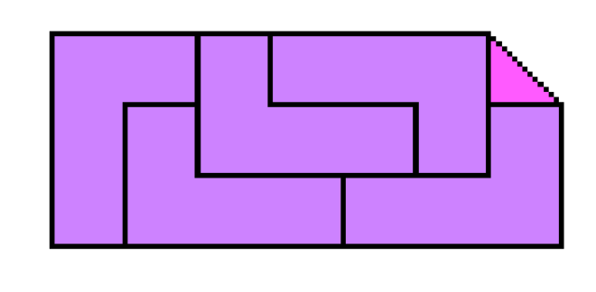

Congruent Partitions of Polygons
Name of Team Members:
- Jason Carr
- Dhvani Patel
- Ari Zerner
Project Description:

We will be examining and attempting to make progress on open problems related to finding decompositions of polygons into N congruent pieces such that the area of the polygon left uncovered by the decomposition is minimized.
A decomposition is a set of regions whose union is a subset of the original polygon, which may or may not be a covering.
Potential Problems:
- Decide partitionability for N=3 and up.
- Find algorithms to decompose polygons for N=3 and up
- Determine upper bounds for missing areas in decompositions
Practical Uses/Application Area:
- Pattern Recognition: For recognising a general polygon object and decompose it into simpler components and then identify and use these components to determine the shape of the object.
- VLSI artwork data processing: Layouts are represented as polygons and to prepare an electron-beam lithography, these polygons are decomposed into fundamental figures.
Other applications are data compression, database systems, image processing and computer graphics.
Timeline:
- Week 6 - Be prepared with an overview for the project and prepare a presentation to present in class
- Week 7 - Finish reading over summary/preliminary papers, find other papers, and create reference list. Also make conjectures and plan approach. Start building simulations simultaneously.
- Week 9 - Finish reading additional papers. Build workable simulations
- Week 11 - Finish implementing simulations
- Week 13 - Begin final write-up
List of References:
The Open Problems Project: Problem 73
Dania El-Khechen, Thomas Fevens, John Iacono, and Gunter Rote.
Partitioning a polygon into two mirror congruent pieces.
R. Nandakumar.
Cutting mutually congruent pieces from convex regions.
R. Nandakumar.
'Congruent partitions' of polygons--a short introduction.
K. Eriksson.
Splitting a Polygon into Two Congruent Pieces.
P. Eades.
Symmetry finding algorithms.